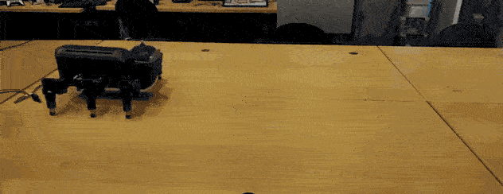
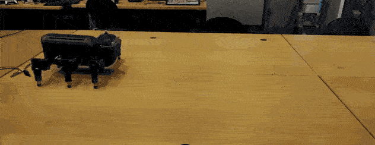

Biography CV
I received M.Sc. in robot systems (advanced robotics technology) from the University of Southern Denmark (SDU), Denmark, in 2023, and B.Eng. in robotics and automation engineering from the Institute of Field Robotics (FIBO), King Mongkut's University of Technology Thonburi, Thailand, in 2019. Currently, I am a researcher/research engineer at the research center for advanced robotics & intelligent automation (ARIA), Vidyasirimedhi Institute of Science and Technology (VISTEC), Thailand.
My research interests, in general, include robot learning and adaptation, embodied intelligence, and robot control. I have collaborated with colleagues from over 20 countries, published 15 peer-reviewed articles, and contributed to 6 major projects.
Recent Activity
Selected Publications

Gain Tuning Is Not What You Need: Reward Gain Adaptation for Constrained Locomotion Learning
Robotics: Science and Systems (RSS), 2025
This work proposes Reward-Oriented Gains via Embodied Regulation (ROGER) for constraint-satisfying real-world robot locomotion learning. ROGER dynamically adapts reward-weighting gains online based on penalties received during embodied interaction, eliminating manual gain tuning while actively preventing constraint violations. In theory, the method is supported by mathematical analyses. In practice, on a 60-kg quadruped robot, ROGER achieved near-zero constraint violations and up to 50% higher task rewards than state-of-the-art baselines. It enabled real-world learning from scratch on flat terrain within one hour without falling and demonstrated successful learning under challenging conditions: step fields, gravel, slippery surfaces, and dynamic loads.
 

Growable and Interpretable Neural Control with Online Continual Learning for Autonomous Lifelong Locomotion Learning Machines
International Journal of Robotics Research (IJRR), 2025
This work presents Growable Online Locomotion Learning under Multicondition (GOLLUM) for continual locomotion learning, addressing challenges such as interpretability, inefficiency, knowledge exploitation, and catastrophic forgetting. GOLLUM leverages interpretability through layer-wise neural control encoding and column-wise robot skill encoding (ring-like structures), enabling interpretable skill acquisition and retention. On a physical hexapod robot, GOLLUM autonomously acquires and retains diverse locomotion skills from scratch, without simulation or human intervention, contributing to lifelong robot learning and adaptation. Additionally, GOLLUM advances robot-inspired bio models, bio-inspired control, and engineering solutions such as multimodal learning by demonstration and self-organized behavior hierarchies, emphasizing its broader potential.
Unsupervised Multiple Proactive Behavior Learning of Mobile Robots for Smooth and Safe Navigation
IEEE/RSJ International Conference on Intelligent Robots and Systems (IROS), 2024
This study introduces a model-free neural control architecture featuring a plug-and-play Multiple Proactive Behavior Learning (MPL) module. Unlike existing approaches that rely on model-based assumptions and extensive data, the MPL adapts control policies online in an unsupervised manner using minimal data. By correlating sensory inputs with local planner commands, the MPL enables autonomous learning of proactive behaviors for smoother motion and collision avoidance. It improves motion smoothness by 10% and reduces collisions by 30% in static environments, and cuts collisions by up to 70% in dynamic settings, offering an efficient cooperation betwen model-free and model-based controls.
Adaptive Bipedal Robot Walking on Industrial Pipes under Neural Multimodal Locomotion Control: Toward Robotic Out-pipe Inspection
IEEE/ASME Transactions on Mechatronics (TMECH), 2023
Out-pipe inspection robots face challenges in balancing on curved surfaces, climbing pipes, overcoming obstacles, and transitioning between segments. This work introduces an adaptive bipedal robot with neural multimodal locomotion control for semi-autonomous inspection. Using eight interpretable neural modules, the control system enables the robot to adapt to various locomotion modes, achieving a speed of 10 cm/s on both horizontal and vertical pipes, improving energy efficiency by over 200% compared to previously developed robots, and overcoming obstacles up to 14 cm in height.
Adaptive Modular Neural Control for Online Gait Synchronization and Adaptation of an Assistive Lower-Limb Exoskeleton
IEEE Transactions on Neural Networks and Learning Systems (TNNLS), 2023
This study presents an adaptive modular neural control (AMNC) system for online gait synchronization of a lower-limb assistive exoskeleton, aimed at preventing conflicting movements and enhancing assistance performance. The AMNC leverages distributed neural modules that interact to utilize neural dynamics and feedback signals, enabling real-time synchronization of exoskeleton movements with the user's gait while reducing tracking errors. Compared to existing methods, AMNC enhances phase, frequency, and shape adaptation, achieving up to an 80% reduction in tracking errors and a 30% decrease in unseen interaction torque.
NeuroVis: Real-time Neural Information Visualization of Embodied Neural Systems
Frontiers in Neural Circuits, 2021
The study introduces "NeuroVis", a novel tool for real-time measurement and visualization of neural spatial-temporal information. NeuroVis visualizes neural structure, neural dynamics, neural plasticity, and neural memory, by using spatial positions, color gradients, connection thickness, and luminous intensity changes. The study presents three use cases: function approximation, robot locomotion control and learning, and large-scale adaptive robot locomotion control, demonstrating how NeuroVis effectively tracks and analyzes these neural components in real-time. The tool aims to improve the understanding of embodied dynamic neural information processes, boost efficient neural technology development, and enhance user trust.
Modular Neural Control for Gait Adaptation and Obstacle Avoidance of a Tailless Gecko Robot
Journal of Intelligent and Robotic Systems (JINT), 2021
This study presents a neural control architecture for gait adaptation and obstacle avoidance in a tailless gecko robot. The system employs a three-layer hierarchical structure: sensory preprocessing, central pattern generation (CPG), and CPG postprocessing. Sensory modules filter noise and initiate behaviors, while the CPG produces rhythmic patterns for different gaits (wave, intermediate, trot) and climbing directions (forward, sideways). The robot adapts its gait on slopes, including 90°, using body inclination sensors and detects obstacles with infrared sensors, switching from forward to sideways climbing.
Education
M.Sc. Robot System (Advanced Robotics Technology)
University of Southern Denmark (SDU), Denmark
Overall GPA 11.5 / 12.0 (96%)
Sep 2021 - Jun 2023
Achievements
B.Eng. Robotics and Automation Engineering
Institute of FIeld roBOtics (FIBO), King Mongkut’s University of Technology Thonburi (KMUTT), Thailand
Overall GPA 3.87 / 4.00 (97%)
Jul 2015 - Jun 2019
Achievements
Contact
: Vidyasirimedhi Institute of Science and Technology, Rayong, Thailand
 : zumoarthicha@gmail.com, arthichas_pro@vistec.ac.th
: zumoarthicha@gmail.com, arthichas_pro@vistec.ac.th
update 1 Feb 2026